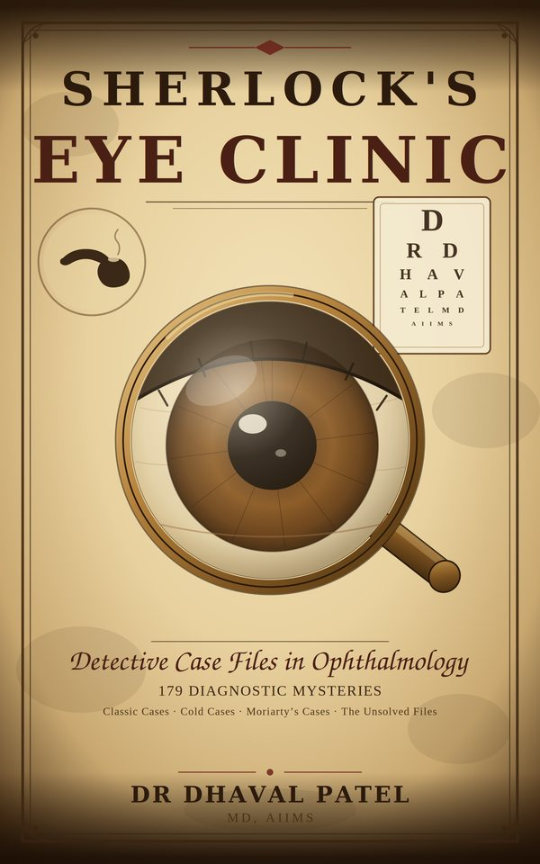

Sherlock’s Eye Clinic: 179 Detective-Style Ophthalmology Case Files (Free Sample Cases)
For: PG residents · Practising ophthalmologists
Last updated: November 2026


“Note the sequence, Watson, not merely the symptoms.” Sherlock’s Eye Clinic turns ophthalmology diagnosis into detective work. Each case opens with a bare presenting complaint, gives you the clues one stage at a time, and then stops: what is your diagnosis? Only then does Holmes walk through the reasoning, and Watson sums up what to do on Monday morning.
- 179 case files in four volumes: Classic Cases (47), Cold Cases (41), Moriarty’s Cases (81) and The Unsolved Files (10)
- Every case: presenting complaint → clues in stages → a reader’s deduction pause → Holmes’s reveal → Watson’s management notes
- Volume III: 81 mimic pairs (angle closure vs uveitis, CRAO vs AION, HSV vs steroid-modified ulcer…) with bedside comparison tables
- Covers every subspecialty: cornea, glaucoma, retina, uvea, neuro-ophthalmology, paediatrics, oculoplasty and trauma
Kindle edition, by Dr Dhaval Patel, MD (AIIMS). Read on any phone, tablet or computer with the free Kindle app.
Amazon links are affiliate links; Sadbhaav Eye Clinic may earn a small commission at no extra cost to you.
How every case works
| Step | What you get | What it trains |
|---|---|---|
| The presenting complaint | A short opening, as the patient tells it | Listening for the detail that matters |
| Clues gathered | History, then examination, then investigation when needed | Updating a differential as evidence arrives |
| Reader’s deduction pause | A pointed question before the answer | Committing to a diagnosis yourself |
| The reveal | Holmes’s reasoning chain, in his own voice | Why each clue counts, and the traps |
| Watson’s notes | What happened, urgency, management and a “don’t miss” | Turning the diagnosis into action |
The four volumes
- Volume I: Classic Cases (47 cases): The common, foundational diagnoses every resident must nail, told so that the “obvious” answer still has to be earned.
- Volume II: Cold Cases (41 cases): Rare and frequently missed diagnoses, with longer clue chains and more room for red herrings.
- Volume III: Moriarty’s Cases (81 cases): Deliberately deceptive presentations built on real diagnostic mimic pairs, each closed with a bedside comparison table.
- Volume IV: The Unsolved Files (10 cases): Areas where the evidence is still moving; the “reveal” is an honest account of where the field stands today.
Free case files from the book
Two complete cases, exactly as they appear in the book. Read the complaint, open the clues one at a time, and make your diagnosis before you reveal Holmes’s solution.
Volume I · Classic Cases · Case 1
Case 1: The Woman Who Saw Halos
The presenting complaint
A 58-year-old woman was brought to the emergency room at nine in the evening by her son, clutching her right eye and moaning softly. "It came on while she was watching the evening news," the son said. "One moment she was fine, the next she said the television lights had grown rings around them, and then the pain started."
That was all Dr Holmes was given before he stepped behind the slit lamp. He asked the resident accompanying him, Dr Watson, to say nothing further of the history — "Let us see what the eye tells us before the tongue tells us more."
Reveal the next clue: Stage 1 — History (elicited, not volunteered)
The patient was a known hyperope, having worn "thick glasses for reading" since her thirties. She had never had eye surgery. She had taken an antihistamine tablet that afternoon for a cold. The pain was unilateral, boring, radiating to the same-sided temple, and accompanied by nausea. Vision in that eye had dropped sharply within the hour.
Reveal the next clue: Stage 2 — Examination
The right eye was diffusely red, with a hazy, steamy-looking cornea. The pupil was mid-dilated and fixed, unreactive to light. The anterior chamber, viewed obliquely with a penlight, appeared shallow — the iris seemed to bow forward, casting a crescent shadow on the nasal side when lit from the temporal side. The left eye, by contrast, was white and comfortable, but on the same oblique penlight test, its anterior chamber also looked shallow.
Reveal the next clue: Stage 3 — Investigation
Applanation tonometry of the right eye read 52 mmHg. The left eye read 19 mmHg. Gonioscopy of the left (quiet) eye — performed once the emergency had been addressed — revealed a narrow, occludable angle.
Reader’s deduction pause
Before reading on: what is happening in this eye, and why did the left eye's angle matter as much as the right eye's pressure?
Made your diagnosis? Reveal Holmes’s solution and Watson’s notes
The reveal
"As I observed the moment she walked in," said Holmes, "a boring pain with halos around lights, in an eye that has gone red and steamy within hours, told me we were dealing with a sudden rise in pressure — and steam on a cornea means the endothelium itself is failing to keep the cornea clear, which happens only at very high pressures, reached only very suddenly.
"The mid-dilated, fixed pupil was the second thread — not constricted, as it would be in uveitis, and not just sluggish, but genuinely stuck partway, because the iris sphincter itself is ischaemic at this pressure. And the shadow test told us the anterior chamber was shallow — the iris was bowing forward against the trabecular meshwork, blocking the very drain the eye needs to lower its own pressure.
"But the detective's work was not finished with one eye. I examined the fellow eye, because angle closure is rarely a disease of one eye alone — it is a disease of one anatomy, present in both. Finding a narrow, occludable angle in the quiet left eye confirmed what the right eye had already shouted: this woman has anatomically crowded angles, and tonight, in the dim light of an evening news broadcast, her right pupil dilated just enough — perhaps helped along by that antihistamine tablet — to push the peripheral iris into the angle and shut the drain entirely. This is acute primary angle closure."
Watson’s notes
What happened: The drainage angle inside the eye — already narrow because of this patient's anatomy — closed off suddenly when her pupil dilated in dim light (and possibly from the antihistamine she'd taken). Fluid built up faster than it could drain, and eye pressure shot up dangerously high within hours.
Immediate management:
- IOP-lowering emergency treatment: IV acetazolamide (unless contraindicated), topical beta-blocker, topical alpha-agonist, topical steroid to settle inflammation.
- Topical pilocarpine once the pressure has come down enough for the sphincter to respond (it often won't work at very high pressure due to ischaemic paralysis of the iris).
- Recheck IOP within the hour; if it isn't falling, escalate — consider anterior chamber paracentesis or urgent laser.
Definitive treatment:
- Laser peripheral iridotomy (LPI) to both eyes once the acute attack has settled — the fellow eye is at real risk and must not be left untreated.
- Gonioscopy of both eyes post-LPI to confirm the angle has opened.
Don't miss: Always examine — and treat — the fellow eye. A patient who "only had trouble in one eye" still has the anatomy in both.
Volume III · Moriarty’s Cases · Case 1
Case 1: The Impostor's Red Eye
The presenting complaint
A 61-year-old man presented to the emergency department at 11 p.m. with a painful, red right eye and blurred vision, having woken from a nap with the pain already present. "It feels deep, aching, and my vision through that eye looks foggy," he said.
Reveal the next clue: Stage 1 — History
The pain had woken him from sleep about an hour earlier, was described as a deep, boring ache radiating toward his temple, and was accompanied by mild nausea. He had no history of eye disease. He mentioned taking an over-the-counter cold and flu tablet earlier that evening, and he was, on direct questioning, moderately hyperopic.
Reveal the next clue: Stage 2 — Examination (deliberately presented in stages, as it might unfold in a real emergency department)
On first glance under the department's fluorescent lighting, the right eye was diffusely red, watering, and clearly uncomfortable, with the patient reluctant to open it fully. The pupil, examined briefly by the triage nurse before Holmes arrived, was recorded as "small and a bit irregular-looking."
Reader’s deduction pause
Based on the story so far — sudden severe unilateral eye pain waking the patient from sleep, nausea, and a red eye — many readers will already be reaching for acute angle-closure glaucoma. Before reading further: what single finding, not yet given, would you need to see before committing to that diagnosis rather than its closest mimic?
Reveal the next clue: Stage 3 — Examination (completed, on Holmes's own assessment)
On formal slit-lamp examination, the pupil was in fact small and irregular — not mid-dilated and fixed — due to posterior synechiae (adhesions between the iris and the underlying lens) at several points around its margin. The anterior chamber showed numerous fine white cells and flare, consistent with active inflammation rather than mechanical crowding. Intraocular pressure, measured directly, was mildly elevated at 24 mmHg — raised, but nowhere near the 50s or 60s typical of acute angle closure. Gonioscopy of the affected eye, performed once the acute discomfort allowed it, showed an open, unremarkable angle.
Reveal the next clue: Stage 4 — Investigation
The fellow eye's angle, checked for comparison, was also open and unremarkable — in contrast to what we would expect to find in true angle-closure disease, where the fellow eye typically shares the same anatomically narrow, occludable angle.
Made your diagnosis? Reveal Holmes’s solution and Watson’s notes
The reveal
"I want every reader to notice exactly where they were led astray, because the trap here is built entirely from true, honestly reported findings," said Holmes. "Sudden pain waking a patient from sleep, nausea, and a red eye genuinely can describe acute angle-closure glaucoma — but they can just as easily describe acute anterior uveitis, and the triage nurse's early note of 'small and a bit irregular' pupil, easy to skim past in a busy emergency department, was in fact the single detail working against the angle-closure diagnosis from the very beginning. Angle closure produces a mid-dilated, fixed, unreactive pupil, as the iris is pushed forward and the sphincter becomes ischaemic. A small, irregular pupil, by contrast, points toward posterior synechiae — the iris sticking down to the lens at points of contact, a finding essentially unique to anterior uveitis, since angle closure of only an hour's duration has not had time to form such adhesions.
"The intraocular pressure sealed the distinction: 24 mmHg is a real, genuine elevation — anterior uveitis frequently does raise pressure, through outflow obstruction from inflammatory cells and swelling — but it is nowhere near the 50 or 60 mmHg one expects in true angle closure, where a mechanically shut drainage angle allows almost no outflow at all. And an open angle on gonioscopy, in both eyes, closes the case definitively: this man's anatomy was never predisposed to angle closure in the first place. This is acute anterior uveitis, not angle-closure glaucoma — a genuinely dangerous mistake to make, since the treatments diverge sharply, and pilocarpine, entirely appropriate for angle closure, would only worsen a uveitic eye by increasing synechiae formation and inflammation."
Watson’s notes
How to tell them apart at the bedside:
| Feature | Acute angle-closure glaucoma | Acute anterior uveitis |
|---|---|---|
| Pupil | Mid-dilated, fixed, round | Normal-to-small, often irregular (synechiae) |
| IOP | Very high (often 40–70+ mmHg) | Normal to mildly/moderately elevated |
| Cornea | Hazy/steamy | Usually clear (unless very severe) |
| Gonioscopy | Narrow/occludable angle (both eyes) | Open angle |
| Anterior chamber | Shallow | Normal depth, with cells/flare |
Management (once correctly diagnosed as anterior uveitis):
- Topical corticosteroids to control inflammation, with frequency tapered as the eye settles.
- Cycloplegic/mydriatic drops (e.g., cyclopentolate or atropine) to relieve ciliary spasm, provide comfort, and help prevent further synechiae formation.
- Investigate for an underlying systemic cause if recurrent, bilateral, granulomatous, or otherwise atypical (HLA-B27-associated disease, sarcoidosis, and others, depending on the clinical picture).
- Monitor IOP closely, as uveitic glaucoma can develop, and treat if it does not settle with control of the underlying inflammation.
Don't miss: Never treat presumed angle closure with pilocarpine without confirming a shallow, occludable angle on gonioscopy first — in a uveitic eye, pilocarpine can worsen synechiae and inflammation rather than help.
Enjoyed the chase? 177 more cases are waiting.
Cold cases like Susac syndrome and the potter’s copper ring, 81 Moriarty mimic pairs, and ten Unsolved Files where the evidence is still being written.
Amazon links are affiliate links; Sadbhaav Eye Clinic may earn a small commission at no extra cost to you.
All 179 case files
The full case list from the book. Titles are given with the diagnosis, as in the book’s own contents page; open a volume to browse.
Volume I: Classic Cases (47 cases)
- The Woman Who Saw Halos — Acute angle-closure glaucoma
- The Weaver’s Blind Spot — Rhegmatogenous retinal detachment
- The Diplomat’s Double Vision — Pupil-sparing CN III palsy
- The Bridesmaid’s Itchy Eyes — Vernal keratoconjunctivitis
- The Marathon Runner’s Red Eye — Recurrent corneal erosion
- The Infant Who Wouldn’t Open Her Eyes — Congenital glaucoma
- The Baker’s Foggy Mornings — Fuchs endothelial dystrophy
- The Student Who Missed the Blackboard — Chiasmal compression
- The Grandmother’s Missing Side — Pituitary adenoma
- The Carpenter’s Metal Splinter — Intraocular foreign body
- The Teenager’s Sudden Squint — Raised intracranial pressure
- The Farmer’s Foreign Body Sensation — Recurrent HSV keratitis
- The Woman Who Looked Like She Never Slept — Thyroid eye disease
- The Photographer’s Flashing Lights — Retinal tear (Shafer’s sign)
- The Chef’s Burning Eyes — Meibomian gland dysfunction
- The New Mother’s Drooping Lid — Ocular myasthenia gravis
- The Diabetic Who Skipped His Checkup — Proliferative diabetic retinopathy
- The Tailor’s Eyelid Lump — Chalazion
- The Fisherman’s Fleshy Growth — Pterygium
- The Accountant’s Alarming Red Patch — Subconjunctival haemorrhage
- The Swimmer’s Sticky Eye — Bacterial conjunctivitis
- The Silent Thief Caught on Routine Screening — Primary open-angle glaucoma
- The Reader Who Lost the Middle of the Page — Dry AMD
- The Same Reader, One Week Later — Wet AMD conversion
- The Welder’s Gritty Eye — Corneal abrasion
- The Factory Worker’s Splash — Chemical eye injury
- The Grandfather’s Watery, Swollen Eye — Dacryocystitis
- The Weaver’s Turned-In Lashes — Entropion/trichiasis
- The Boy Who Crossed His Eyes to Read — Accommodative esotropia
- The Sleeper’s Floppy Lid — Floppy eyelid syndrome
- The Lens-Wearer’s Bumpy Lids — Giant papillary conjunctivitis
- The Weekend Boxer’s Blood-Filled Eye — Traumatic hyphema
- The Reader Who Held the Page Further Away — Presbyopia
- The Welder’s Midnight Agony — UV photokeratitis
- The Programmer’s Tired, Dry Eyes — Computer vision syndrome
- The Twenty-Eight-Weeker’s First Eye Check — Routine ROP screening
- The Infant With the Constantly Watery Eye — Congenital nasolacrimal duct obstruction
- The Child With the Angry Red Rash Around Both Eyes — Allergic contact dermatitis
- The Goatherd’s Scarred Eyelid — Trachoma
- The Boatman’s Yellowish Bump — Pinguecula
- The Retired Postman’s Unexpectedly High Pressure — Pseudoexfoliation syndrome/glaucoma
- The Reader’s Sudden Tilted World — Isolated fourth (trochlear) nerve palsy
- The Driver’s Missing Half-World — Homonymous hemianopia
- The Baker’s Routine Eye Check — Hypertensive retinopathy
- The Infant With the Cloudy White Reflex — Congenital cataract
- The Six-Year-Old Who Never Complained — Anisometropic amblyopia
- The Grandmother’s Watering, Turned-Out Eye — Involutional ectropion
Volume II: Cold Cases (41 cases)
- The Case of the Vanishing Visual Field — Giant cell arteritis
- The Musician’s Trembling Eyes — Oculopalatal tremor
- The Potter’s Copper Ring — Wilson’s disease
- The Fisherman’s Night Blindness — Retinitis pigmentosa
- The Traveller’s Floating Worm — DUSN
- The Accountant’s One-Sided Headache — Paroxysmal hemicrania
- The Child With the Golden Eye — Retinoblastoma
- The Weight-Lifter’s Sudden Drop — Valsalva sub-ILM haemorrhage
- The Widow’s Grief-Stricken Eyes — Functional visual loss
- The Gardener’s Fungal Ulcer — Fungal keratitis
- The Pregnant Woman’s Blurred Vision — Pre-eclampsia choroidopathy
- The Retired Sailor’s Mask-Like Face — CPEO
- The Beekeeper’s Swollen Lid — Rhino-orbital-cerebral mucormycosis
- The Librarian’s Shrinking World — Non-organic tunnel vision
- The Vintner’s Aching, Painful Eyes — Vogt-Koyanagi-Harada disease
- The Old Soldier’s Forgotten Injury — Sympathetic ophthalmia
- The Artist’s Patchwork Hearing Loss — Susac syndrome
- The Elder’s Transient Gray Curtain — Ocular ischaemic syndrome
- The Brother’s Hazy Vision After the Bleed — Terson syndrome
- The Traveller’s Recurring Mouth Ulcers — Behçet’s disease
- The Toddler’s One White Eye — Coats’ disease
- The Farmer’s Slow-Growing Freckle — Choroidal melanoma
- The Mechanic’s Pulsing Eye — Carotid-cavernous fistula
- The Miner’s Migrating Uveitis — Tuberculous uveitis
- The Malnourished Child’s Night Fears — Vitamin A deficiency
- The Typist’s Shimmering Eye — Superior oblique myokymia
- The Fair-Haired Infant Who Never Made Eye Contact — Oculocutaneous albinism
- The Egg-Yolk Spot the Teenager Never Noticed — Best vitelliform macular dystrophy
- The Student’s Painful, Bulging Eye With a Fever — Cavernous sinus thrombosis
- The Toddler’s Rapidly Bulging Eye — Orbital rhabdomyosarcoma
- The Courier’s Rapidly Blinding Red Eye — Acute retinal necrosis
- The Boy With Freckled Skin and a Dim Eye — Neurofibromatosis type 1 / optic pathway glioma
- The Overnight Wearer’s Alarming Morning — Contact lens acute red eye (CLARE)
- The Pharmacist’s Pressure Without a Story — Normal-tension glaucoma
- The Boxer’s Sudden Dim Eye — Traumatic optic neuropathy
- The Teenager’s Sudden Blurry Patch — Sickle cell retinopathy
- The Infant’s Off-Center Optic Disc — Morning glory disc anomaly
- The Newborn’s Notched Iris — Iris/chorioretinal coloboma
- The Infant With No Coloured Iris — Aniridia
- The Toddler’s Cloudy Eyes With a Family Pattern — Axenfeld-Rieger syndrome
- The Infant’s Port-Wine Birthmark and a Hidden Eye Finding — Sturge-Weber syndrome
Volume III: Moriarty’s Cases (81 cases)
- The Impostor’s Red Eye — Angle closure vs. uveitis
- The Painless Deception — CRAO vs. AION
- The Two-Faced Optic Nerve — Typical optic neuritis vs. MOG antibody-associated disease
- The Wolf in Keratitis’ Clothing — HSV vs. steroid-modified geographic ulcer
- The Pretender’s Proptosis — TED vs. pseudotumor vs. orbital cellulitis
- The Counterfeit Cataract — Cataract masking uveitis
- The Double Agent’s Diplopia — Myasthenia gravis + thyroid eye disease
- The False Confession — Malingering vs. genuine cortical blindness
- The Haemorrhage That Hid the Tear — PVD with vitreous haemorrhage vs. hidden retinal tear
- The Masquerade Syndrome — Uveitis vs. intraocular lymphoma
- The Copycat Conjunctivitis — Neonatal conjunctivitis timing
- The Deceptive Disc — Papilledema vs. pseudopapilledema
- The Traitorous Tear — Dry eye vs. ocular surface squamous neoplasia
- The Anesthetist’s Dilated Pupil — Pharmacologic vs. CN III vs. Adie’s
- The Two Kinds of Redness — Episcleritis vs. scleritis
- The Discharge That Lied — Viral vs. bacterial conjunctivitis
- The Chronic Irritation Triangle — Blepharitis + dry eye + allergy
- The Blood That Pointed the Wrong Way — Vitreous haemorrhage hiding a detachment
- The Fighter’s Delayed Pressure Spike — Angle-recession glaucoma
- The Swollen Lid That Wouldn’t Move — Preseptal vs. orbital cellulitis
- The Rash That Arrived After the Eye Did — HZO vs. HSV keratitis
- The Cone That Wasn’t Simple Astigmatism — Keratoconus
- The Split That Didn’t Detach — Retinal detachment vs. retinoschisis
- The Uneven Pupils in the Family Photographs — Horner’s syndrome
- The Violinist’s Twitching Face — Blepharospasm vs. hemifacial spasm
- The Café Manager’s Stubborn Upper Redness — Floppy eyelid syndrome vs. superior limbic keratoconjunctivitis
- The Clockmaker’s Second Eye Goes Dark — Giant cell arteritis (revisited)
- The Painter’s Sluggish, Aching Eye — Pigment dispersion syndrome
- The Pink Eye That Wasn’t — Viral conjunctivitis vs. HSV epithelial keratitis
- The Chronic Blinker’s Burning Lids — Blepharitis vs. ocular rosacea
- The Shopkeeper’s Blurry, Bloodshot Eye — Branch vs. central retinal vein occlusion
- The Quiet Eye With the Loud Pressure — Posner-Schlossman syndrome vs. acute angle-closure glaucoma
- The Lens-Wearer’s Painful White Spot — Sterile CL infiltrate vs. microbial keratitis
- The Lid Lump That Kept Coming Back — Recurrent chalazion vs. sebaceous gland carcinoma
- The Child With the Painful, Bumpy Eye — Phlyctenular keratoconjunctivitis vs. herpetic keratitis
- The Retired Mason’s Melting Edge — Marginal keratitis vs. Mooren’s ulcer vs. PUK
- The Swimmer’s Relentless Pain — Acanthamoeba keratitis vs. herpetic/bacterial keratitis
- The Second Opinion on Foggy Mornings — ICE syndrome vs. Fuchs endothelial dystrophy
- The College Student’s Year-Round Itch — Vernal vs. atopic keratoconjunctivitis
- The Screening Visit That Almost Reassured — Chronic angle closure vs. open-angle glaucoma
- The Post-Surgical Eye That Wouldn’t Settle — UGH syndrome vs. recurrent post-op inflammation
- The Uveitis That Refused to Behave Like Uveitis — HLA-B27-associated vs. idiopathic uveitis
- The Photographer’s Scattered White Spots — APMPPE vs. serpiginous choroiditis
- The Quiet Eye With the Different-Coloured Iris — Fuchs heterochromic iridocyclitis
- The Student’s Hazy Vitreous, Two Ways — Toxoplasmosis vs. toxocariasis
- The Transplant Patient’s Advancing Shadow — Acute retinal necrosis vs. CMV retinitis
- The Man’s Sudden Gray Curtain, Reconsidered — Rhegmatogenous vs. exudative retinal detachment (BDUMP)
- The Office Worker’s Puzzling Distortion — True macular hole vs. pseudohole
- The Bull’s-Eye, Explained Two Ways — Hydroxychloroquine toxicity vs. Stargardt disease
- The Stargazer’s Enduring Blind Spot — Inherited dystrophy vs. solar retinopathy
- The Architect’s Rapidly Fading Night Vision — Retinitis pigmentosa vs. cancer-associated retinopathy
- The Cyclist’s Three Fundus Findings After a Fall — Commotio retinae, macular hole, choroidal rupture
- The Twin Lines That Looked Alike — Lacquer cracks vs. angioid streaks
- The Two Eyes That Told Different Stories — True vs. pseudo-Foster-Kennedy syndrome
- The Second Episode That Looked Too Severe — Typical optic neuritis vs. NMOSD
- The Toddler’s Eye That Wouldn’t Turn Out — Sixth nerve palsy vs. Duane retraction syndrome
- The Student Who Couldn’t Look Up and In — Inferior oblique palsy vs. Brown syndrome
- The Truck Driver’s Double Vision, Reconsidered — INO vs. myasthenic pseudo-INO
- The Worsening Morning Headache, Twice Over — IIH vs. cerebral venous sinus thrombosis
- The Young Man Whose Vision Faded Without Warning — LHON vs. toxic/nutritional optic neuropathy
- The Dancer’s One Stiff Eye — Thyroid eye disease vs. isolated orbital myositis
- The Cricketer’s Sunken, Numb Cheek — Globe contusion vs. orbital floor blowout fracture
- The Retiree’s Painful Eye After a Routine Procedure — TASS vs. infectious endophthalmitis
- The Diabetic’s Blurry Eye, Months After Surgery — Irvine-Gass CME vs. diabetic macular oedema
- The Teenager’s Rapidly Swelling, Agonizing Eye — Orbital cellulitis vs. necrotizing fasciitis
- Two Generations of Puffy Eyelids — Dermatochalasis vs. blepharochalasis
- The Actor’s Sudden Facial Twitch — Essential blepharospasm vs. tardive dyskinesia
- The Baby Whose Eyes Only Seemed to Cross — Pseudostrabismus vs. true infantile esotropia
- The Infant Whose Head Wouldn’t Stop Bobbing — Spasmus nutans vs. optic pathway glioma
- The Full-Term Baby With the Unexpected Screening Result — ROP-mimicking presentation vs. FEVR
- The Toddler’s Two Different Red Lumps — Capillary hemangioma vs. orbital rhabdomyosarcoma
- The Infant Whose Eyes Told Two Different Stories — Retinal haemorrhage pattern assessment
- The Lifeguard’s Gritty Eyes That Wouldn’t Quit — Microsporidial keratoconjunctivitis vs. adenoviral EKC
- The Patient Whose Old Infection Came Back to the Cornea — Syphilitic interstitial keratitis vs. herpetic stromal keratitis
- The Woman Whose "Allergy" Kept Coming Back — Adult chlamydial conjunctivitis vs. viral/allergic conjunctivitis
- The Three Ways a Lens Can Cause a Crisis — Phacomorphic vs. phacolytic vs. lens-particle glaucoma
- The Two Pupils That Both Refused to React to Light — Argyll Robertson pupil vs. Adie’s tonic pupil
- The Infant’s White Eye, One More Way — Persistent fetal vasculature vs. retinoblastoma
- Three Babies With Cloudy Corneas — Birth trauma vs. congenital glaucoma vs. Peters anomaly
- The Three Reasons a Tear Gland Can Swell — Dacryoadenitis vs. benign enlargement vs. lacrimal gland tumour
- The Corner of the Eye That Kept Getting Redder — Canaliculitis vs. chronic conjunctivitis
Volume IV: The Unsolved Files (10 cases)
- The Suspect Who Wasn’t Charged — Glaucoma suspect criteria
- The Thickened Choroid — Central serous chorioretinopathy / pachychoroid spectrum
- The Child Whose Glasses Weren’t Enough — Myopia control
- The Eye After the Fever — Post-viral retinal vasculopathy
- The Machine’s Second Opinion — AI-assisted screening
- The Uveitis That Finally Got a Proper Name — SUN classification criteria and the exclusions they require
- The Gift That Might Not Last — Gene therapy for inherited retinal disease
- The Premature Infant’s Changing Odds — Evolving ROP screening criteria
- The Picture That Sees More Than the Eye — OCT-angiography in AMD monitoring
- The Threshold That Keeps Moving — Treatment thresholds in mild NAION
Who it is for
- PG residents preparing for MS, DNB, FICO, FRCOphth and similar exams, who need to reason, not just recall.
- Viva and OSCE candidates: the stepwise clue format is exactly how examiners unfold a case.
- Teachers who want ready-made case discussions for teaching rounds.
- Practising ophthalmologists and optometrists who enjoy a good clinical mystery.
Practise the same skill for free on the site: Spot the diagnosis, the Viva Hot Seat and the Diagnostics Lab.
Frequently asked questions
Who is Sherlock’s Eye Clinic for?
Ophthalmology residents and postgraduates first; sharp final-year medical students, optometrists and practising ophthalmologists who enjoy case-based reasoning will also find plenty in it.
Is it a story book or an exam book?
Both. Each case is a short detective story, but the clues, the reasoning and Watson’s management notes are written to PG exam and clinic standard. Volume III is built entirely on the mimic pairs that exam questions like to test.
How is it different from an MCQ book?
An MCQ tells you the answer options. Here you are given only a presenting complaint and then the history, examination and investigations in stages, so you practise the real skill: forming the diagnosis yourself before you are told.
Can I read it on my phone?
Yes. It is a Kindle book, so it works in the free Kindle app on any phone, tablet or computer, as well as on Kindle devices.
Can I try a case before buying?
Yes: two complete cases from the book are free on this page, one from Volume I and one from Volume III.
Other books that teach the same way


Compare all four in Learn ophthalmology differently, or see all books by Dr Dhaval Patel and the exam book chooser.
Revise with flip cards
Key sources
- Patel D. Sherlock’s Eye Clinic: Detective-style ophthalmology case files. Kindle edition, 2026. ASIN B0GX2SPV68.
📘 Want the exam-ready deep dive? This topic, and much more is covered in Ophthalmology Explorer (A High-Yield Clinical Reference for Ophthalmology Residents, Fellows & Board Exams) — available on Kindle. See all my books.
How to cite this page
Patel D. Sherlock’s Eye Clinic: 179 Detective-Style Ophthalmology Case Files (Free Sample Cases). RPC Rounds (Sadbhaav Eye Clinic). Updated November 2026. Available at: https://www.sadbhaavclinic.com/sherlocks-eye-clinic.html. Accessed [date].
Want to know more about treatment? Read about all books by Dr Dhaval Patel or book a consultation with Dr. Dhaval Patel.